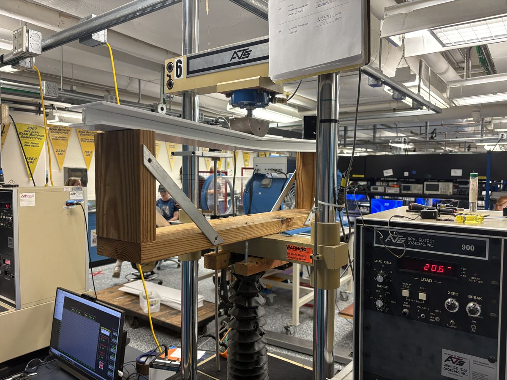
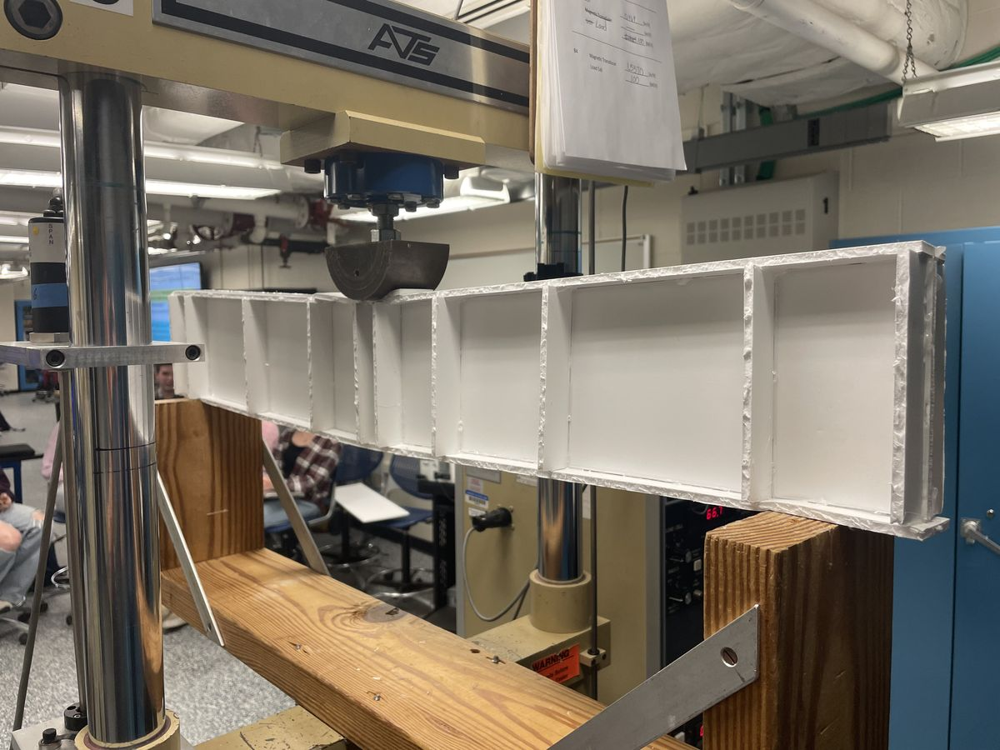
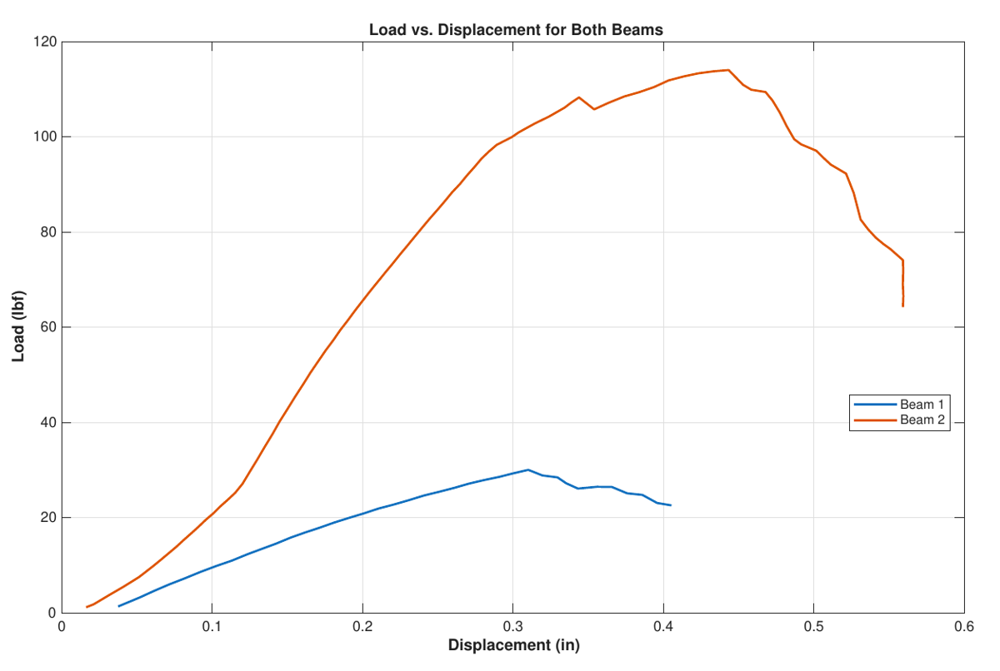
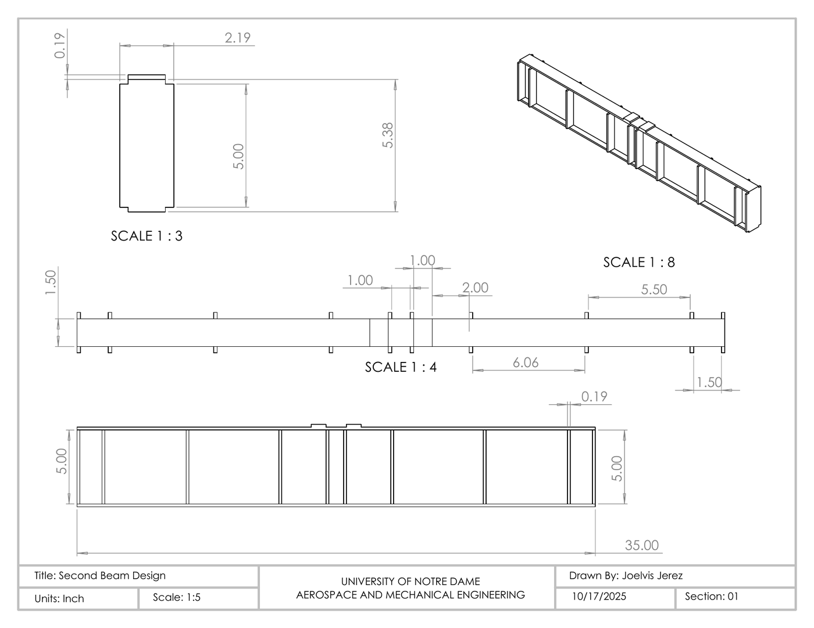

Build-A-Beam
Design, build and load-test a foam-board beam in three-point bending, then redesign it after the first one fails.


Choosing a cross-section
Maximum bending moment grows in direct proportion to the applied load, so the goal was the most bending resistance for the least foam. I compared three cross-sections by area and second moment of area. The solid rectangle was stiffest but used the most material, and the box section would have been hard to build from one sheet. The I-beam was the most material-efficient and the simplest to make.
| CROSS-SECTION | AREA (in²) | I (in⁴) |
|---|---|---|
| Solid rectangle | 6.10 | 10.01 |
| Hollow box | 3.60 | 8.71 |
| I-beam (chosen) | 2.26 | 0.56 |
Failure, then redesign
Loaded at 0.5 in/min, the first beam failed at 30 lbf when its top flange wrinkled under compression. Its 1-inch web was too short. For the second beam I raised the web to 5 inches and varied the cross-section along the length, adding internal stiffeners to spread the load and prevent local buckling. I drew both the cut plans and the beam designs in SolidWorks and analyzed the load data in MATLAB.


What I learned
Beam 2 still failed by compressive buckling of the top, just at a much higher load. Raising the web moved the failure point up, but the next improvement would come from reinforcing the compression flange itself.